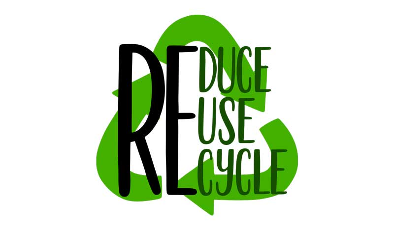

Solutions: Taking Action Against Plastic Pollution
The plastic crisis is daunting, but there is hope. Together, we can make a difference by adopting sustainable practices, supporting innovative solutions, and advocating for change.
Innovative Solutions to Combat Plastic Pollution
The Ocean Cleanup Project. Founded by Boyan Slat, this initiative uses passive systems with long floating barriers to collect plastic debris in the ocean. These systems help remove garbage efficiently and prevent further pollution.
Reducing Single-Use Plastics. Many governments and organizations are implementing bans on plastic bags, straws, and Styrofoam. Supporting these policies and making individual efforts, like switching to reusable items, can significantly reduce waste.
Community Action. Local beach cleanups and recycling drives bring communities together to tackle pollution. Participating in or organizing such events can have a big impact.
Eco-Friendly Alternatives. Choose products made from biodegradable materials or recycled plastics. Many companies now offer innovative solutions to replace everyday plastic items.

What You Can Do
Reduce: Limit your use of single-use plastics. Opt for reusable bags, bottles, and containers.
Reuse: Find creative ways to repurpose plastic items.
Recycle: Follow local recycling guidelines to ensure proper disposal.